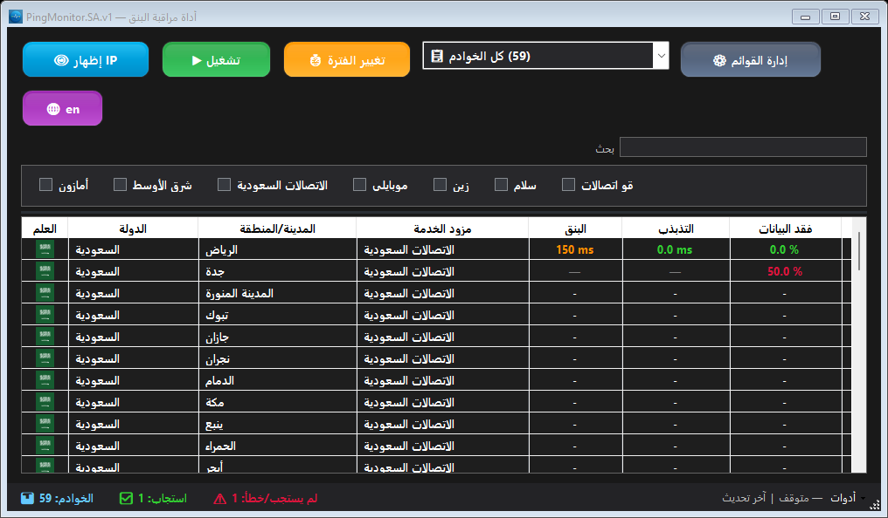

قياسات تصل أولًا بأول
تابع البنق والتذبذب وفقد الحزم، مع تنفيذ ما يصل إلى 8 طلبات بالتزامن وعرض النتائج أثناء وصولها.
البنق، تذبذب التأخير وفقد الحزم في واجهة واحدة. اختر خوادمك، أنشئ قوائمك، وتابع التفاصيل بالعربية أو الإنجليزية.
Windows 10+ · .NET Framework 4.7.2 · تشغيل بعد فك الضغط

من نظرة سريعة على النتائج إلى تفاصيل كل خادم، بأدوات واضحة وقوائم تناسب استخدامك.
تابع البنق والتذبذب وفقد الحزم، مع تنفيذ ما يصل إلى 8 طلبات بالتزامن وعرض النتائج أثناء وصولها.
اختر المزودين أو أنشئ قائمة مخصصة. استورد قوائمك وصدّرها، مع معاينة قبل دمج أي قائمة جديدة.
انقر مرتين على الخادم لعرض رسم آخر 180 نتيجة، أو ابحث بالمدينة والمزود والعنوان ورتّب الأعمدة.
صدّر بيانات الخادم أو ملخص الجلسة إلى CSV، لمراجعة النتائج ومقارنتها بعد انتهاء المراقبة.
فعّل تنبيهات Windows الاختيارية بعد ثلاث محاولات ICMP متتالية بلا رد. التنبيهات معطلة افتراضيًا.
العربية والإنجليزية، حفظ حجم النافذة والأعمدة، ودعم تكبير العرض مع حركات خفيفة وخيار لتقليلها.
خيارات المزودين والمناطق: STC · موبايلي · زين · سلام · GO · Amazon · الشرق الأوسط
البرنامج جاهز للتشغيل من الحزمة، دون معالج تثبيت.
المتطلبات: Windows 10 أو أحدث
و.NET Framework 4.7.2
اختر PingMonitor.SA.v1.zip، ثم فك الضغط عن جميع محتوياتها في مجلد تختاره.
افتح PingMonitor.SA.v1.exe، وأبقِ ملف PingMonitor.SA.v1.exe.config بجواره.
حدّد المزودين من الأعلى، أو افتح «إدارة القوائم». لتفاصيل أكثر، انقر مرتين على أي خادم.
عن الحفظ والقياسات والاستخدام اليومي.
داخل %LOCALAPPDATA%\PingMonitor.SA في مجلد AppData المخفي افتراضيًا، بعيدًا عن ملف EXE. يمكنك فتح مجلد البيانات من «حول البرنامج» عبر F1. تُحفظ القوائم وتفضيلات العرض تلقائيًا مع نسخة احتياطية لملف البيانات.
القياسات تبقى في الذاكرة أثناء الجلسة فقط. لحفظها، صدّر بيانات الخادم من نافذة التفاصيل أو ملخص الجلسة من قائمة «أدوات» إلى CSV.
ليس بالضرورة؛ قد يمنع الخادم طلبات ICMP. افتح التفاصيل لمعرفة سبب آخر فشل. نسبة الفقد تعتمد على آخر 20 محاولة ICMP، ولا تشمل أخطاء DNS أو التنفيذ.
البحث يغيّر الصفوف المعروضة فقط. تستمر مراقبة الخوادم المحددة حتى إذا لم تظهر ضمن نتائج البحث.
Ctrl+Shift+M يبدّل تقليل الحركة، وCtrl+F ينقلك للبحث، وCtrl+C ينسخ عنوان الخادم المحدد. استخدم F5 للتحديث وF1 لفتح «حول البرنامج».